作者：王靖雅
发布日期：2025-06-25
参考项目：1210-329
伴发事件：
治疗开始后发生的事件，可影响与临床问题相关的观测结果的解读或存在。
常见种类：终止治疗，其他治疗，终末事件
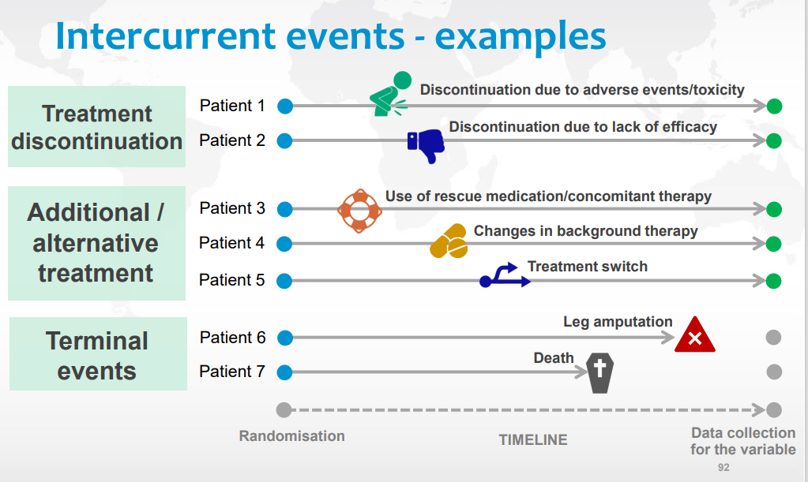
对应解决策略 - 5种策略
疗法策略 - 不管是否有伴发事件发生
假想策略 - 伴发事件没有发生
复合变量策略 - 在目标变量定义中考虑
在治策略 - 伴发事件发生之前的治疗效应
主层策略 - 通过人群定义
疗法策略
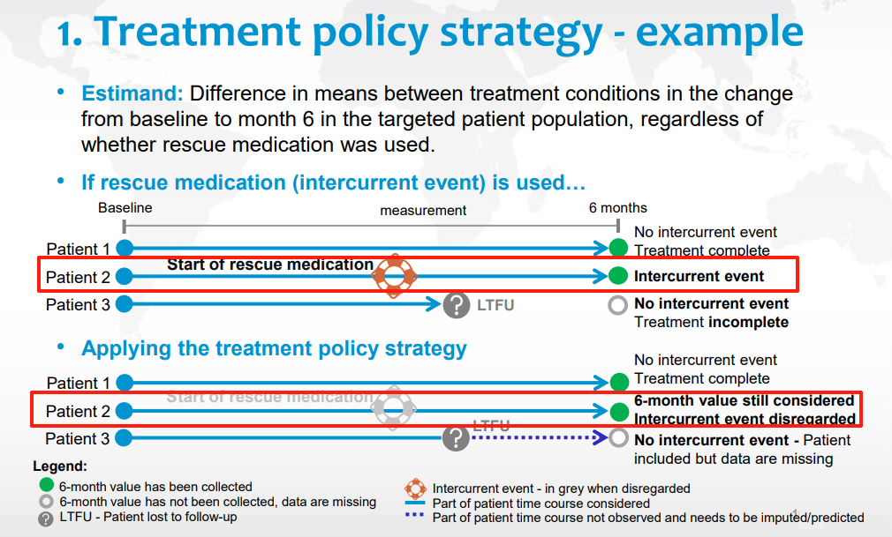
接受伴发事件的发生，并视作为正常存在的节点，使用所有的数据进行分析。
假想策略
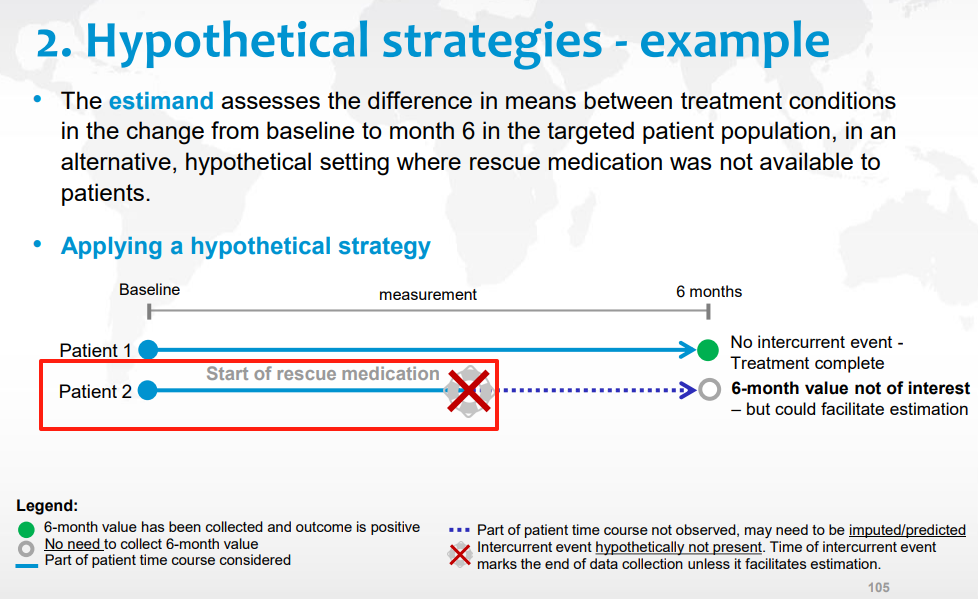
假设没有伴发事件的发生，即从伴发事件节点后的所有信息都缺失了。
复合变量策略
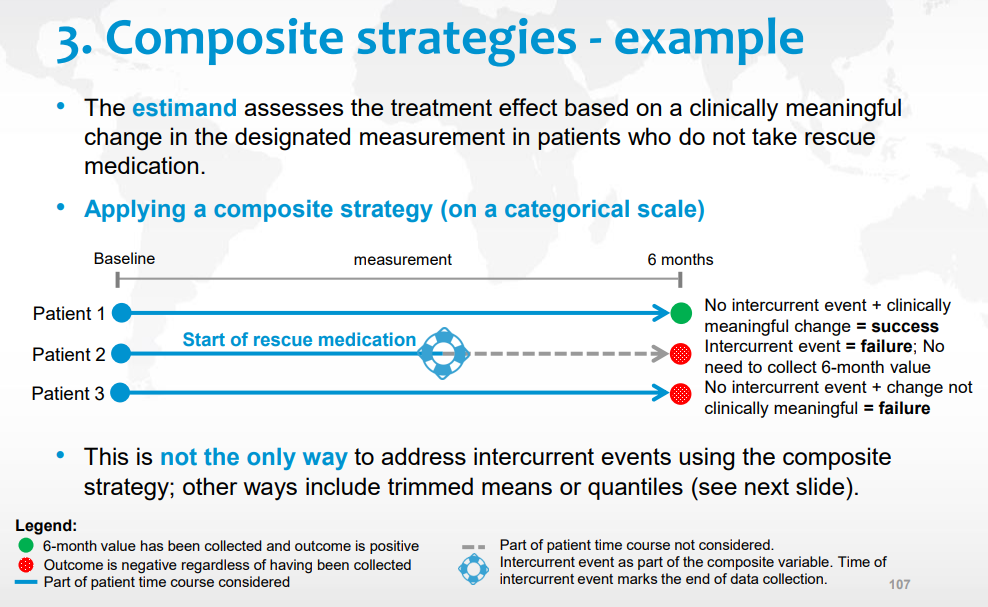
把伴发事件视为一种结果/结局。伴发事件后的信息不重要且不考虑。
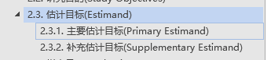
主要研究目的1
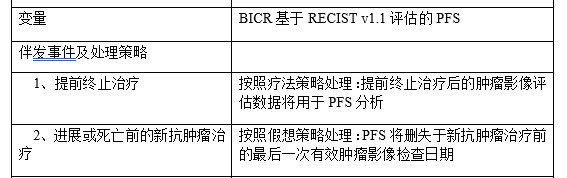
主要研究目的2
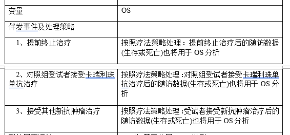
主要研究目的2的补充估计目标1
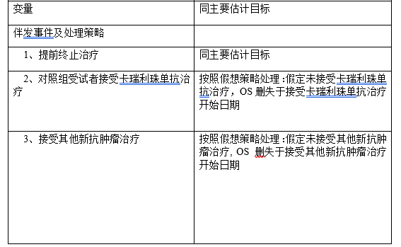
主要研究目的2的补充估计目标2
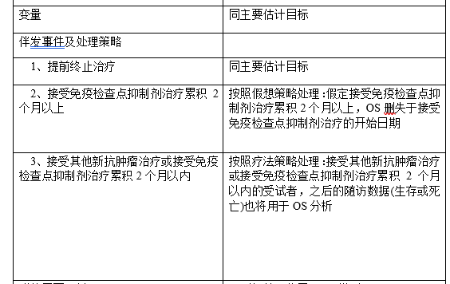
注意：上述描述中使用的【删失于】不太标准，可能造成处理上的误解和后续ADTTE生成过程中对事件或删失处理的逻辑冗杂。建议使用以下截图中的描述和理解思路。
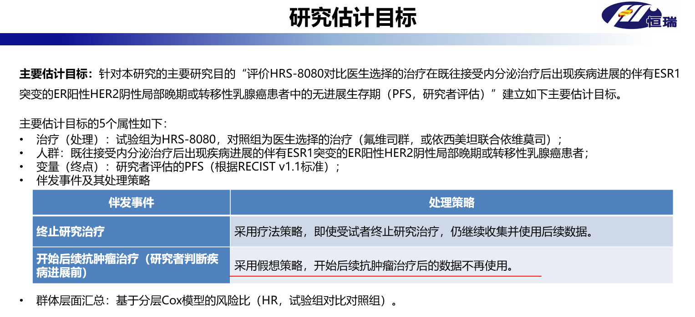
具体思路：
总结上述伴发事件的类型，比如这个项目中包含五类伴发事件： 提前终止治疗，接受新抗肿瘤治疗，对照组受试者接受卡瑞利珠单抗治疗，接受免疫检查点抑制剂治疗累积2个月以上，接受其他新抗肿瘤治疗或接受免疫检查点抑制剂治疗累积2个月以内
总结估计目标，比如这个项目中： 估计目标1，估计目标2，估计目标2的补充估计目标1，估计目标2的补充估计目标2
做了EST01STR，EST02STR，ES02SST1，ES02SST2这四个变量，用来存放对每个不同估计目标中对各个伴发事件的处理策略。
对每个受试者中的伴发事件进行抓取。
## 提前终止治疗判断规则
data eot;
set adsl;
if EOT01STT="已终止";
if missing(tr02sdt) then eotdt = max(of eotdt01-eotdt06); else eotdt = max(of eotdt03-eotdt06);
if eotdt < f_pddth or missing(f_pddth) then PFSEOTFL = "Y";
if eotdt < dthdt or missing(dthdt) then OSEOTFL = "Y";
**排除终止治疗原因;
if missing(tr02sdt) and ^missing(DCTRS01) and (index(DCTRS01, "35") or index(DCTRS01, "17")) then call missing(PFSEOTFL, OSEOTFL);
_DCTRS = catx("-", of DCTRS03-DCTRS05);
if ^missing(_DCTRS) and index(_DCTRS, "6") then call missing(PFSEOTFL, OSEOTFL);
keep usubjid PFSEOTFL OSEOTFL EOTSTT eotdt dthdt DCTRS01 _DCTRS;
run;
data adice1;
set eot;
if ^missing(PFSEOTFL) or ^missing(OSEOTFL);
ATERM = "提前终止治疗";
ACAT1 = "提前终止治疗";
ASTDT = eotdt;
SRCDOM = "ADSL";
if PFSEOTFL = "Y" then EST01STR = "疗法策略";
if OSEOTFL = "Y" then do;
EST02STR = "疗法策略";
ES02SST1 = "疗法策略";
ES02SST2 = "疗法策略";
end;
run;
以下为当前案例项目中的使用格式，具体请参考部门Estimand spec规范。
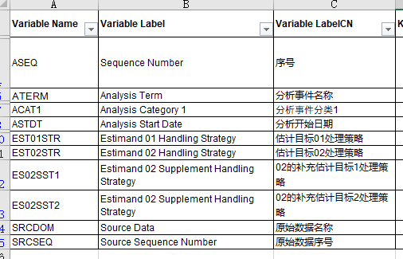
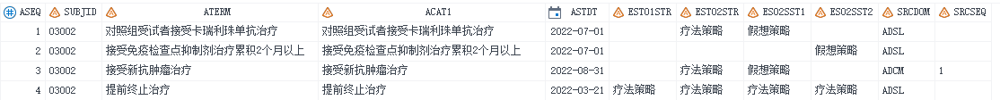
注意： 这里呈现的策略为会对估计目标变量造成影响的实际策略，比如截图中，“接受新抗肿瘤治疗”这个伴发事件有发生，但对于主要估计目标1-PFS这个变量来说，并没有发生在PD或死亡的事件前，故EST01STR没有赋值为“假想策略”。
注意： 建议直接调用ADICE中的伴发事件日期。
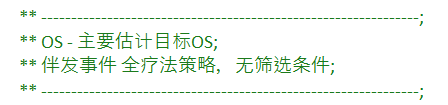
案例1：
** ---------------------------------------------------------------;
** PFS_BICR - 基于进展或死亡前的新抗肿瘤治疗前的adrs数据集分析
** PFS将删失于新抗肿瘤治疗前的最后一次有效肿瘤影像检查日期
** 伴发事件 假想策略：接受新抗肿瘤治疗
** ---------------------------------------------------------------;
data adrs_birc;
set adamprt.adrs;
where paramcd="OVRLRESP" and ^missing(avalc) and ^missing(adt) and PARCAT1="RECIST 1.1";
if RSEVAL="独立评估员" and RSACPTFL="Y";
run;
proc sql;
create table adrs_birc_pfs as
select a.*, b.astdt as f_anti, c.dthdt, c.randdt
from adrs_birc as a
left join adamprt.adice(where=(ATERM = "接受新抗肿瘤治疗")) as b on a.usubjid=b.usubjid
left join adamprt.adsl as c on a.usubjid=c.usubjid
having adt <= f_anti or missing(f_anti);
run;
案例2：
** ---------------------------------------------------------------;
** OS2 - 补充估计目标OS2;
** 伴发事件 假想策略: 接受免疫检查点抑制剂治疗累积2个月以上;
** ---------------------------------------------------------------;
proc sql;
create table adsl_os2 as
select a.*, b.astdt as cmflagdt
from adamprt.adsl(where=(ITTFL="Y")) as a
left join adamprt.adice(where=(ATERM = "接受免疫检查点抑制剂治疗累积2个月以上" and ES02SST2="假想策略")) as b on a.usubjid=b.usubjid;
run;
data adsl_os2_cut;
set adsl_os2;
if ^missing(cmflagdt) then do;
lstalvdt = cmflagdt;
call missing(dthdt);
end;
run;
data adtte22;
set adsl_os2_cut;
length evntdesc cnsdtdsc paramcd param $200;
format startdt adt yymmdd10.;
** OS;
paramcd = "OS3"; param="Overall Survival (Months) - Supplementary2";
if ^missing(dthdt) then do;
cnsr=0;
startdt = randdt; adt=dthdt;
evntdesc="死亡"; evntdesn = 1;
cnsdtdsc="";
end;
else if ^missing(cmflagdt) then do;
cnsr=1;
startdt = randdt; adt=cmflagdt;
evntdesc="接受免疫检查点抑制剂治疗累积2个月以上"; evntdesn = 4;
cnsdtdsc="接受免疫检查点抑制剂治疗的开始日期";
end;
** 其余不重要的代码已省略...;
run;